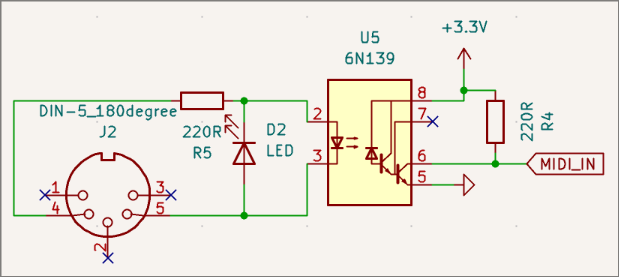
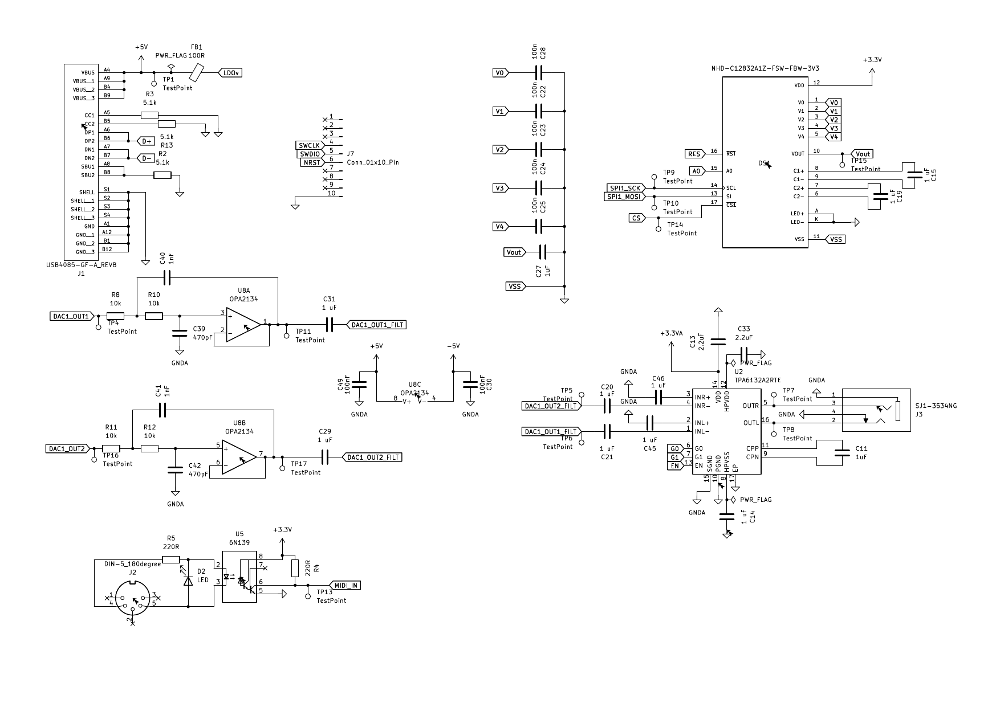
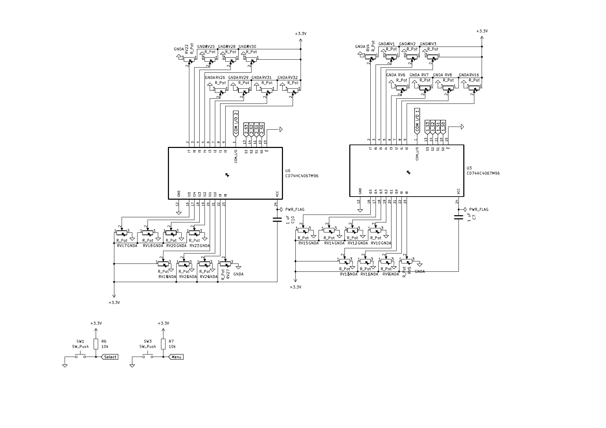
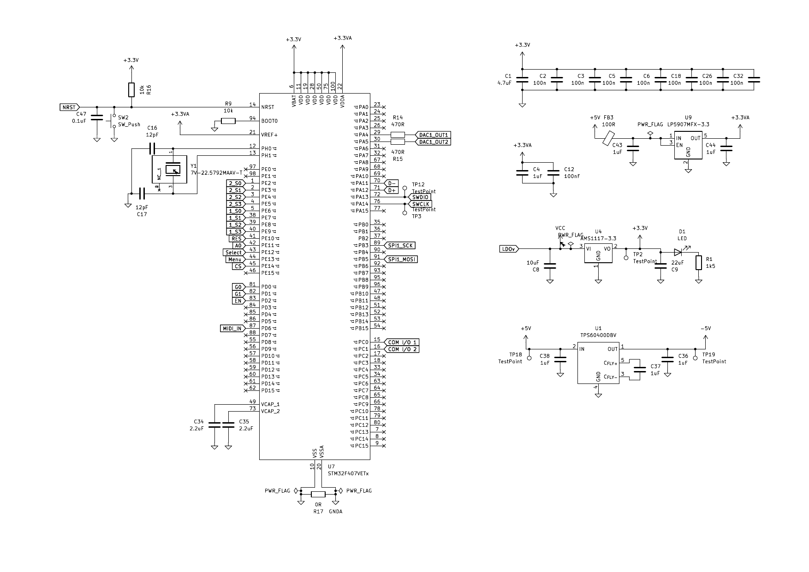

In this second part I will go over the creation and thought process behind building the PCB design of the hardware version.

In this second part I will go over the creation and thought process behind building the PCB design of the hardware version.
See the figure below to see the planned layout excluding the LCD display:

PCB stands for Printed Circuit Board and it has a similar use case to a breadboard except it is custom manufactured where the electrical components are presoldered together. Part of why I chose to use this over a perfboard is because of how complex the schematic became.
We will end up with the following structure:

I chose the STM32F407VETx as the microcontroller because:
A good practice is separating analog and digital power supplies. Analog circuits can be very sensitive and since digital signals switch on and off at extremely high speeds it can cause voltage spikes that can introduce an audible hum. I decided to completely separate the lines, including having two different LDOs for each.
An LDO or Low Dropout Regulator is a DC linear voltage regulator that supplies a steady voltage. It does a fantastic job converting a higher voltage (5V from a USB) into a clean 3.3V needed to power the microcontroller. For the analog side I chose the LP5907MFX-3.3 and for the digital side I chose the AMS1117-3.3.
As listed in the datasheet, the digital line requires one 4.7\mu capacitor and multiple (I chose 7 because other people used that much) 100n capacitors for decoupling while analog requires a 1\mu and 100n capacitor. This is used for reducing noise. Capacitors at its simplest stores and releases electrical energy, they're like small batteries. But they also can block DC current while allowing the noise to pass (to ground in our case).
The VCAP pins are used as output pins for the microcontroller's internal LDO. It uses this to reduce the 3.3V to a lower one to power the CPU. All we have to do is add a 2.2\mu for each pulled down to ground.
VDD is the main power supply for the chip's digital logic, I/O pins, and internal peripherals. VBAT is secondary power pin connected to a battery or supercapacitor used to power the Real-Time Clock (RTC) and backup registers when the main VDD is turned off. We don't have a battery so I connected both VBAT and VDD to the 3.3V digital rail. VDDA is the dedicated positive analog power supply pin that power the internal ADCs, DAC, and other analog circuits. I connected this to 3.3VA or the analog 3.3V rail.
The NRST pin is used for a manual reset of the processor. According to the datasheet it requires a 2.2\mu capacitor to ground and then a switch connected to ground. Internally it is connected to VDD, but just in case I connected it to 3.3V just in case.
The BOOT0 pin tells the chip where to look for code. If pulled low (0V) it boots normally from the main flash memory, where the user application is. If high (3.3V) the microcontroller boots from the system memory. This launches a built-in, unalterable bootloader that allows you to flash new firmware via interfaces like UART or USB without needing an external hardware programmer. It is pulled low here.
Crystal Oscillators are used by the MCU to provide clock signals and keep time based on the physical vibration of the crystal. The datasheet allows for a crystal from 4-26 MHz. We need one on the higher end since we are dealing with audio. I chose a 22.5792MHz one because it can be divided into the 44.1kHz sample rate we need. From the crystal's datasheet we can get its load capacitance. From this we can determine the value of the capacitor from the following formula:
$$C=2(C_L-C_{stray})$$
Where C_{stray} is the estimated PCB stray capacitance (2-3pF).
We are using a USB-C connector for both USB 2.0 data transfer and 5V power delivery to the circuit. The USB D+ and D− pair is connected to the STM32 USB peripheral and is used for data communication between the host and the device.
The connector shield is connected to ground for EMI suppression and to provide a low-impedance return path for high-frequency noise.
The SBU1 and SBU2 pins are not used, since USB Alternate Modes (such as DisplayPort) are not required in this design. These pins are left unconnected.
The CC1 and CC2 pins are each connected to ground through a 5.1 k\ohm pull-down resistor (Rd), indicating that the device is operating as a USB sink. This allows the host to detect cable orientation and enables VBUS power delivery.
The VBUS pin provides the 5V supply from the USB, which is used to power the system.
A female MIDI connector is actually very similar to the TRS (Tip Ring Sleeve) aux counterpart.

They differ in their uses, the TRS cable is used for transferring audio data while MIDI is a protocol that sends notes, strike velocity, and duration. We have the following setup for connecting it to the MCU through an USART_RX pin. We have an LED diode that signals that it has been plugged in and an Optocoupler. What it does is transfer electric signals using light. In this case it provides galvanic isolation which protects the microcontroller from unwanted AC from flowing between them.
USART stands for Universal Synchronous/Asynchronous Receiver-Transmitter. It allows for communication with other devices through serial protocols. A serial protocol transmit data one bit at a time sequentially over a single channel or wire. The TX pin is for transmission and the RX pin is for receiving. Since MIDI sends data one at a time, this makes it perfect for our usecase.
Also, for future reference, MIDI out/thru ports do not require optocouplers at all.

MIDI basically works like a regular keyboard, by default the keys are in a key-off state but when pressed it goes into a key-on state which causes events to happen. Take a look at the below table (upper nibble is the first 4 bits in the byte):
| Message Type | Status Byte (upper nibble) | Data Byte 1 | Data Byte 2 | Description |
|---|---|---|---|---|
| Note On | 0x90 | Key # (i.e. middle C) | Velocity | Starts a note (pitch) with a certain force (volume/attack) |
| Note Off | 0x80 | Key # | Velocity | Stops a note. A Note On with Velocity 0 (00h) is often used instead. |
| Control Change | 0xB0 | Controller # | Controller Value | Changes an adjustable parameter (e.g., Modulation Wheel, Volume, Sustain Pedal). |
| Program Change | 0xC0 | Program # | None | Selects a new instrument sound (patch). |
| Pitch bend | 0xE0 | LSB | MSB | A 14-bit value for smooth pitch adjustments (center is 4000h). |
void MIDI_ProcessByte(uint8_t data) {
static uint8_t status_byte = 0;
static int data_count = 0;
static uint8_t param1;
// Checks if you are getting a status signal)
if (data & 0x80) {
status_byte = data;
data_count = 0;
// for data byte
} else {
if (status_byte == 0) {
// ignore stray byte
return;
}
// remember: & is the AND operator
// so 0xF0 is 11110000 in binary and here is used as a mask to get rid of the lower bits that don't matter in this case
uint8_t message_type = status_byte & 0xF0;
// note on || note off || CC || Pitch Bend
if (message_type == 0x90 || message_type == 0x80 || message_type == 0xB0 || message_type == 0xE0) {
if (data_count == 0) {
param1 = data;
data_count = 1; // wait for second data byte
} else if (data_count == 1) {
param2 = data;
if (message_type == 0x90) {
int note = param1;
int velocity = param2;
if (velocity > 0) {
Parse_Note(note, velocity);
} else {
Parse_Note_Off(note);
}
} else if (message_type == 0x80) {
int note = param1;
Parse_Note_Off(note);
}
}
}
}
return note_play;
}
Audio is generated digitally on the STM32 and then passed through an analog signal chain to produce a clean output. The synthesizer runs at a 44.1kHz sample rate (same as CDs), before conversion to an analog signal. The signal passes through four stages:
| G0 | G1 | Gain Setting |
|---|---|---|
| Low | Low | -6 dB |
| Low | High | 0 dB |
| High | Low | 3 dB |
| High | High | 6 dB |
In addition, the OPA2134 is a true audio op-amp, it requires a bipolar (dual-rail) supply which is why a negative voltage rail produced by the TPS604 is used.
To get around this, the board uses two 16-channel analog multiplexers (MUXes). Each MUX takes 16 analog inputs and routes exactly one of them at a time to a single output line, selected via 4 digital control pins (S0–S3). With two MUXes running in parallel, the board can read up to 32 potentiometers. See below what values the pots are set to:
| MUX # | Channel # | Knob | Category | Description |
|---|---|---|---|---|
| 1 | I0 | Release | Envelope | Sets the time it takes for the volume (or filter) to fade back to silence after the key is released. |
| 1 | I1 | Pulse Width | Oscillator | Adjusts the duty cycle (on/off ratio) of the Pulse/Square wave, changing the tone from a square to a thin, nasal pulse |
| 1 | I2 | Pitch | Oscillator | Fine-tunes the base frequency of the oscillator, typically over a ± one-octave range. |
| 1 | I3 | Octave | Oscillator | Selects the register (pitch range) of the oscillator in whole octave steps. |
| 1 | I4 | Resonance | Filter Controls | Boosts the frequencies right at the cutoff point which emphasizes the filter's effect, high settings can cause self-oscillation |
| 1 | I5 | Cut off | Filter Controls | Sets the frequency point where the filter begins to reduce (or "cut off") upper harmonics. |
| 1 | I6 | Type | Filter Controls | Selects the type of filter (e.g., Low-Pass, High-Pass, Band-Pass, Notch) |
| 1 | I7 | Drive/Morph/Gain | Filter Controls | Adds overdrive or saturation before/after the filter, or morphs between different filter characteristics |
| 1 | I8 | Wave | Oscillator | Selects the waveform (e.g., Sine, Saw, Square, Triangle, Noise) used by the oscillator. |
| 1 | I9 | Type | Effects | Selects the type of effect algorithm (e.g., Delay, Reverb, Chorus, Flanger). |
| 1 | I10 | Feedback | Effects | Controls how much of the effect's output is fed back into its input (e.g., number of delay repeats) |
| 1 | I11 | Attack | Envelope | Sets the time it takes for the sound to reach its full volume after a key is pressed. |
| 1 | I12 | Time | Effects | Sets the core timing of the effect (i.e. the length of the delay repeats or the size of the reverb space). |
| 1 | I13 | Mix | Effects | Controls the wet/dry balance (the ratio between the unprocessed (dry) signal and the effected (wet) signal) |
| 1 | I14 | Decay | Envelope | Sets the time it takes for the volume to drop from the peak (Attack) to the sustained volume (Sustain) |
| 1 | I15 | Sustain | Envelope | Sets the level at which the sound holds while the key remains pressed (after the Attack/Decay phases). |
| 2 | I0 | Glide | General | Controls the speed at which the pitch smoothly slides from one note to the next (portamento). |
| 2 | I1 | Pan | General | Adjusts the overall position of the sound between the left and right stereo channels. |
| 2 | I2 | Master Volume | General | Controls the final output level of the entire synthesizer. |
| 2 | I3 | Octave | Arpeggiator | Sets the range of octaves the arpeggiated sequence spans. |
| 2 | I4 | Control Knob | General | A user-assignable knob that can be mapped to any internal parameter not already covered. |
| 2 | I5 | Swing | Arpeggiator | Shifts the timing of every other note to create a rhythmic "shuffle" or groove. |
| 2 | I6 | Mode | Arpeggiator | Selects the direction of the arpeggiated notes (i.e., Up, Down, Up/Down, Random) |
| 2 | I7 | Fade | LFO | Controls the time it takes for the LFO's modulation effect to reach its full Mod Amount depth |
| 2 | I8 | Division | Arpeggiator | Sets the speed of the arpeggiated notes, usually in beat-synced values (e.g., 1/4 note, 1/8 note) |
| 2 | I9 | Type | LFO | Selects the waveform of the Low-Frequency Oscillator (e.g., Sine, Triangle, Square, Random) |
| 2 | I10 | Rate | LFO | Sets the speed or frequency of the LFO's cycle (how fast the modulation occurs). |
| 2 | I11 | Unison | Modulation | Stacks and detunes multiple voices per note to create a very thick, wide, and 'fat' sound. |
| 2 | I12 | Pitch | LFO | Controls the depth of the LFO's effect specifically on the oscillator's pitch (vibrato). |
| 2 | I13 | FX Send | Modulation | Controls the amount of the main signal routed to the shared global effects unit (e.g., dedicated Reverb/Delay amount). |
| 2 | I14 | Spread | Modulation | Pans the multiple stacked voices across the stereo field to create a greater sense of spatial width. |
| 2 | I15 | Mod Amount | Modulation | Sets the overall intensity/depth of the LFO's effect on its assigned parameter (excluding dedicated Pitch control). |
Rather than having the STM32 poll each channel manually, the ADC is configured to read both MUX outputs and hand results off via DMA (Direct Memory Access). This means the ADC can complete a conversion and transfer the result into memory without CPU intervention which frees the MCU to spend its cycles on audio synthesis instead. Once a conversion completes, HAL_ADC_ConvCpltCallback fires, values are stored, and the MUX select lines are advanced to the next channel for the following read.
Because both MUXes are read together on each conversion cycle, one ADC conversion yields two knob values at once. One from MUX A and one from MUX B on the same channel index. This is why knob_values is indexed as current_mux_channel * 2 + 0 and current_mux_channel * 2 + 1: each pair corresponds to the same selector position on both MUXes. Below is some code written to read the knob values:
void select_knob(int num_mux, int knob_num) {
if (num_mux == 0) {
HAL_GPIO_WritePin(S0_1_PORT, S0_1_PIN, (knob_num & 0x01) ? GPIO_PIN_SET : GPIO_PIN_RESET);
HAL_GPIO_WritePin(S1_1_PORT, S1_1_PIN, (knob_num & 0x02) ? GPIO_PIN_SET : GPIO_PIN_RESET);
HAL_GPIO_WritePin(S2_1_PORT, S2_1_PIN, (knob_num & 0x04) ? GPIO_PIN_SET : GPIO_PIN_RESET);
HAL_GPIO_WritePin(S3_1_PORT, S3_1_PIN, (knob_num & 0x08) ? GPIO_PIN_SET : GPIO_PIN_RESET);
} else if (num_mux == 1) {
HAL_GPIO_WritePin(S0_2_PORT, S0_2_PIN, (knob_num & 0x01) ? GPIO_PIN_SET : GPIO_PIN_RESET);
HAL_GPIO_WritePin(S1_2_PORT, S1_2_PIN, (knob_num & 0x02) ? GPIO_PIN_SET : GPIO_PIN_RESET);
HAL_GPIO_WritePin(S2_2_PORT, S2_2_PIN, (knob_num & 0x04) ? GPIO_PIN_SET : GPIO_PIN_RESET);
HAL_GPIO_WritePin(S3_2_PORT, S3_2_PIN, (knob_num & 0x08) ? GPIO_PIN_SET : GPIO_PIN_RESET);
}
}
void HAL_ADC_ConvCpltCallback(ADC_HandleTypeDef* hadc) {
if (hadc->Instance == ADC2) {
knob_values[current_mux_channel * 2 + 0] = adc_dma_buffer[0];
knob_values[current_mux_channel * 2 + 1] = adc_dma_buffer[1];
current_mux_channel = (current_mux_channel + 1) % NUM_MUX_CHANNELS;
select_knob(0, current_mux_channel);
select_knob(1, current_mux_channel);
}
}
We also have Select and Menu buttons as well. They are pulled up to 3.3V and debouncing is handled in code.
For the user interface, the board uses an NHD-C12832A1Z-FSW-FBW-3V3 which is a 128×32 pixel monochrome graphic LCD. This gives enough resolution to show waveform previews, parameter values, and menu navigation without needing a full color display.
The display is driven over Serial Peripheral Interface (SPI). SPI uses a "master-slave" architecture, where one primary device (the master) controls the communication and timing. It relies on four main signal lines:
This display is write-only, so MISO isn't used/connected here.
Alongside these is the A0 pin, which tells the display's internal controller whether the incoming byte is a command (like "clear the screen" or "set cursor position") or data (actual pixel content to display).
RES is a hardware reset line for the display controller, letting the MCU force the display back to a known state on startup. This is useful since a display can end up in a bad state if power sequencing isn't clean.
Below is the full schematic for the board:


